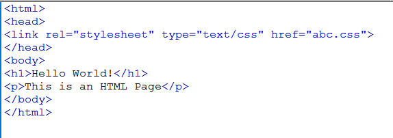
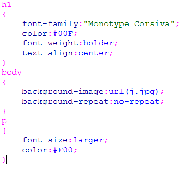
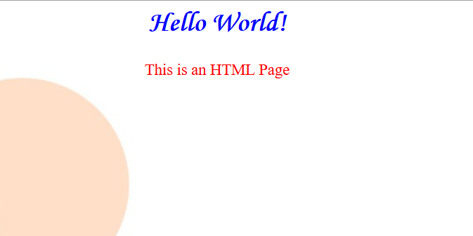

An external style sheet can be written in any text editor. The file should not contain any html tags.
The style sheet file must be saved with a .css extension.
For example, let the name of external stylesheet be abc.css.We can link it in the stylesheet by the following code:
<link rel="stylesheet" type="text/css" href="abc.css">
The HTML code would look like:

The CSS code would look like:

The Final output of the HTML page would be:

Designed by Kashish Gupta, Hargun Singh, Karan Verma.